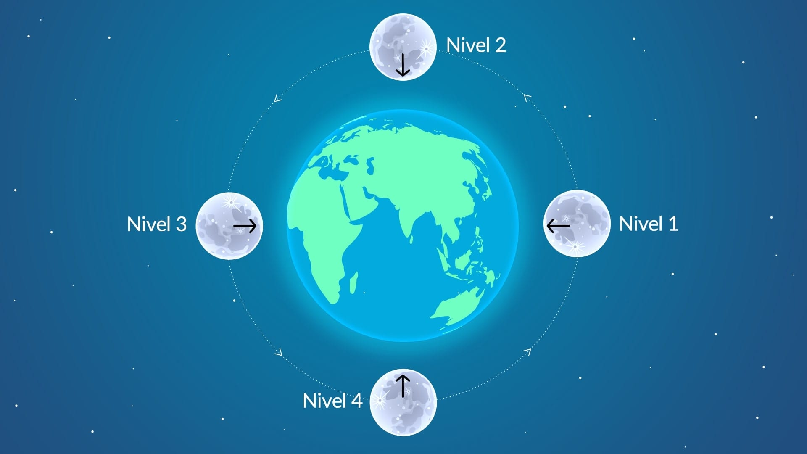

PAGINA DE DAYELI ANABEL QUILLA NINA



Las fases de la luna se producen cuando la Luna realiza una vuelta completa alrededor de la Tierra
La luna se mueve al rededor de la Tierra en 28 dias aproximadamente, durante este tiempo ocurren las 4 fases de la Luna
Luna nueva, Luna llena, Luna Cuarto creciente, Cuarto menguante

Sabia que...?
¿De qué color es realmente la superficie lunar? ¿Qué distancia hay entre la Tierra y su satélite? ¿A qué altura está la cumbre Selenean? Te contamos algunas de las características más interesantes de este astro.